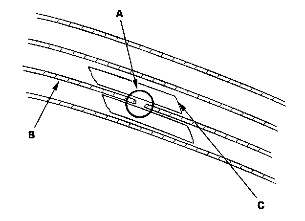
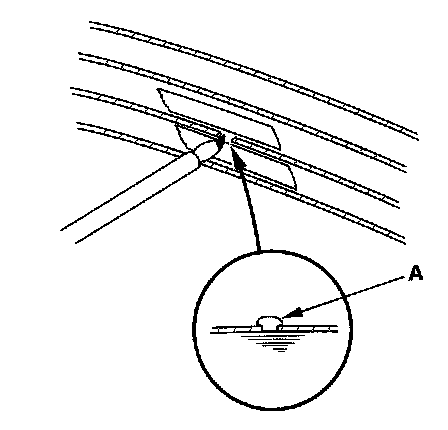

AM/FM Antenna Repair
AM/FM Antenna RepairNOTE: To make an effective repair, the broken section must not be longer than one inch.

1. Lightly rub the area around the broken section (A) with fine steel wool, then clean it with alcohol.
2. Carefully mask above and below the broken portion of the window antenna wire (B) with cellophane tape (C).

3. Mix the silver conductive paint thoroughly. Using a small brush, apply a heavy coat of paint (A) extending about 1/8° on both sides of the break. Allow 30 minutes to dry.
4. Check for continuity in the repaired wire.
5. Apply a second coat of paint in the same way. Let it dry 3 hours before removing the tape.